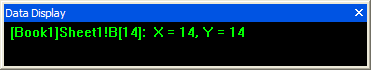
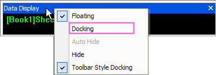

Das Hilfsmittel Datenanzeige
- 
Das Hilfsmittel Datenanzeige stellt eine dynamische Anzeige der
XY-Koordinaten eines Datenpunkts oder der Bildschirmposition des Cursors
zur Verfügung. Das Fenster Datenanzeige öffnet sich, wenn folgende Hilfsmittel
der Symbolleiste Tools ausgewählt werden.
Größe des Hilfsmittels Datenanzeige anpassen
Um die Anzeige des Hilfsmittels zu vergrößern oder zu verkleinern, ziehen
Sie an einer Ecke des Fensters. Als freies Hilfsmittel läßt es sich überall
im Arbeitsbereich von Origin positionieren.
Andocken und Abdocken des Hilfsmittels Datenanzeige
- Um das Hilfsmittel Datenanzeige abzudocken, ziehen Sie es aus dem
Bereich der Symbolleisten oder klicken Sie doppelt in den Bereich der
Anzeige.
- Zum erneuten Andocken in den gleichen Bereich der Symbolleiste,
klicken Sie doppelt auf die Titelleiste des Hilfsmittels.
- Wenn das Hilfsmittel nicht angedockt ist, können Sie das Andockverhalten
durch Rechtsklick auf die Titelleiste und Auswählen der Option Andocken
im Kontextmenü steuern.
- 
Kontextmenübefehle für das Hilfsmittel Datenanzeige
Kontextmenübefehle
stehen durch Klicken mit der rechten Maustaste auf die Titelleiste der
Symbolleiste zur Verfügung.
- Abdocken: Die Symbolleiste ist
frei beweglich im Arbeitsbereich von Origin.
- Andocken: Das Hilfsmittel wird
im Bereich der Symbolleisten fest verankert.
- Automatisch im Hintergrund: Wenn
das Hilfsmittel angedockt ist, legen Sie fest, ob es automatisch ausgeblendet
wird, sobald die Maus sich von ihm entfernt.
- Ausblenden: Aktiviert das Hilfsmittel,
so dass es mit den Pfeiltasten der Tastatur verschoben werden kann.
- Andocken Symbolleiste Stil: Deaktivieren
Sie diese Option und docken Sie das Hilfsmittel in vertikaler Richtung
an, während die Positionpfeile eingeblendet sind.
Kontextmenübefehle
stehen durch Klicken mit der rechten Maustaste in das Hilfsmittel zur
Verfügung
- Feste Größe*:
Setzt die Größe des Texts im Hilfsmittel auf die derzeitige Größe fest.
Änderungen der vertikalen oder horizontalen Abmessungen des Hilfsmittels
haben keinen Einfluss auf dieTextgröße.
- Horizontal anpassen*:
Der Text im Hilfsmittel wird immer über die gesamte Breite des Hilfsmittels
angezeigt. Eine Änderung der horizontalen Abmessung des Hilfsmittels ändert
die Textgröße entsprechend. Eine Änderung der vertikalen Abmessung hat
keine Auswirkung auf die Textanzeige.
- Vertikal anpassen*:
Der Text wird immer über die gesamte Höhe des Hilfsmittels angezeigt.
Die Änderung der vertikalen Abmessung des Hilfsmittels ändert die Textgröße
entsprechend. Eine Änderung der horizontalen Abmessung hat keine Auswirkungen
auf die Textgröße.
- Angedockt: Verankert das Hilfsmittel
automatisch im Bereich der Symbolleisten (wenn der Kontextmenübefehl nicht
schon ausgewählt war). Wird das eingerastete Hilfsmittel dann durch Ziehen
zu einem freien Hilfsmittel, klicken Sie es doppelt an, um es wieder einzurasten.
Alternativ ziehen Sie das Hilfsmittel an den Rand des Arbeitsbereichs.
- Einstellungen: Öffnet das Dialogfeld
Eigenschaften Datenanzeige.
|
*Dieser Befehl steht nur zur Verfügung, wenn
das Kontrollkästchen Automatisch anpassen im Dialogfeld Eigenschaften
Datenanzeige nicht eingeschaltet ist (siehe unten). |
Anpassen des Hilfsmittels Datenanzeige
Um die Anzeige des Hilfsmittels einschließlich der Schriftart, Textfarbe
und Hintergrundfarbe anzupassen, klicken Sie es mit der rechten Maustaste
an und wählen Sie aus dem Kontextmenü Eigenschaften aus. Dieser Kontextmenübefehl
öffnet das Dialogfeld Eigenschaften Datenanzeige.
- Schriftart: Wählen Sie aus dieser
Liste die Schriftart für den Text des Hilfsmittels aus.
- Mindestschriftgröße: Legen Sie
die Mindestschriftgröße für den Text im Hilfsmittel Datenanzeige fest.
- Textfarbe: Wählen Sie aus dieser
Liste die Textfarbe des Hilfsmittels aus.
- Hintergrundfarbe: Wählen Sie
aus dieser Liste die Hintergrundfarbe für das Hilfsmittel aus.
- Automatisch anpassen: Schalten
Sie dieses Kontrollkästchen ein, um sicherzustellen, dass der gesamte
Text im Hilfsmittel eingeblendet wird, wenn dieses in seinen Abmessungen
verändert wird. Die Schriftart passt sich automatisch der Größe des Hilfsmittels
an. Ist dieses Kontrollkästchen nicht aktiviert, stehen die Kontextmenübefehle
Feste Größe, Horizontal anpassen und Vertikal anpassen
zur Verfügung.